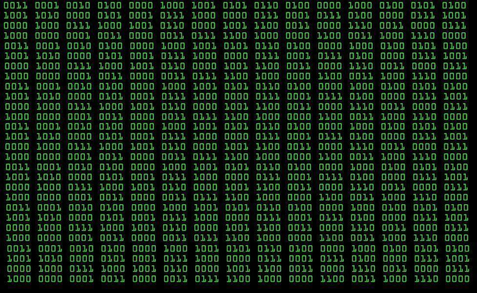
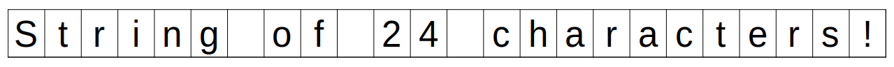
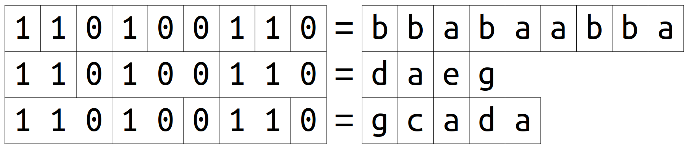
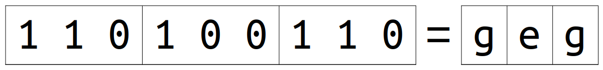
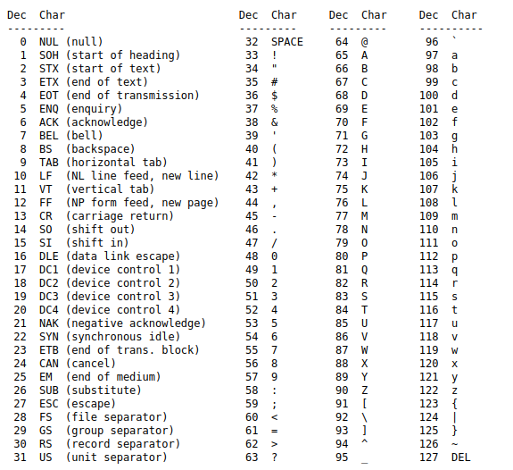

Binary CodeRepresenting information using only 0 and 1
Digital Technologies2023-24
Representing information using only 0 and 1
Digital Technologies2023-24
2023-24
Table of Contents
Introduction
What types of information do computers store?
Numbers
Text
Images

Video
Sound
Zeroes and ones
Everything is stored as a sequence of zeroes and ones.
Binary code
System for representing information using only two symbols:
0,1
Natural numbers
Digits and sequences
- Sequence:
1234 - Digit: each symbol in a sequence.
Counting with only two symbols
Position values: decimal numbers
2 2 2 2
Position values: binary numbers
1 1 1 1
Binary ➡️ decimal
| 128 | 64 | 32 | 16 | 8 | 4 | 2 | 1 |
|---|---|---|---|---|---|---|---|
| 1 | 0 | 1 | 1 | 0 | 1 | 0 | 1 |
📝 Exercise
1 1 0 1 1 1 0 0
📝 Exercise
0 0 0 1 0 1 1 1
📝 Exercise
Which is the biggest 8-digit binary number?
Decimal ➡️ binary (subtract method)
Code in binary the number: 221
📝 Exercise
Code in binary the number: 118
Decimal ➡️ binary (division method)
Code in binary the number 221 using the division method.
📝 Exercise
Code in binary the number: 118
Information units
- 1 bit = 1 binary digit
- 1 byte = 8 bits
- 1 Kilobyte (1 Kb) = \(2^{10}\) bytes = 1,024 b ≈ 1,000 b
- 1 Megabyte (1 Mb) = \(2^{10}\) Kb ≈ 1 million bytes
- 1 Gigabyte (1 Gb) = \(2^{10}\) Mb ≈ 1 billion bytes
- 1 Terabyte (1 Tb) = \(2^{10}\) Gb ≈ 1 trillion bytes
Storage size
- El Quijote: 2,034,611 characters (≈ 2 Mb).
- Picture of 1MP in JPG: approx. 0.5Mb.
- Video HD 60FPS: 200Mb/minute.
Texts
Characters
- Character: symbols that make up the written text.
- Text: a sequence of characters.

Text binary code
a = 0; b = 1; c = 10; d = 11; e = 100; f = 101; g = 110
Code: 110100110
Meaning?

Where does each character start and end?
Fixed-length code
a = 000; b = 001; c = 010; d = 011;
e = 100; f = 101; g = 110
Code: 110100110
Meaning?

ASCII
Example
Hello, world!
72 101 108 108 111 44 32 119 111 114 108 100 33
01001000 01100101 01101100 01101100 01101111 00101100 00100000 01110111 01101111 01110010 01101100 01100100 00100001
📝 Exercise
Code in 8-bit ASCII: IPv4
Images
Bitmap images (raster graphics)
Vector graphics
Bitmap images
Pixel = Picture element
Pixel size = width (px) x height (px)
Color
RGB = Red Green Blue
1 byte per color = 3 bytes per pixel
Example: 11111111 11111111 00000000 = yellow (red + green)
Color depth
Color depth = number of bits per pixel
RGB = 24 bits/px
📝 How many different colors can be represented?
📝 How much memory occupies a 800x600 px image?
Color Picker
Transparency
Alpha Channel: 1 byte for opacity.
RGBA = RGB + Alpha Channel
4 bytes per pixel
JPG ❌ no alpha channel
PNG ❔ optional alpha channel